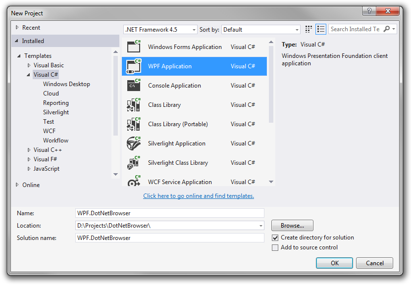
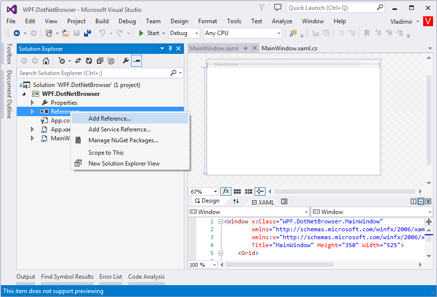
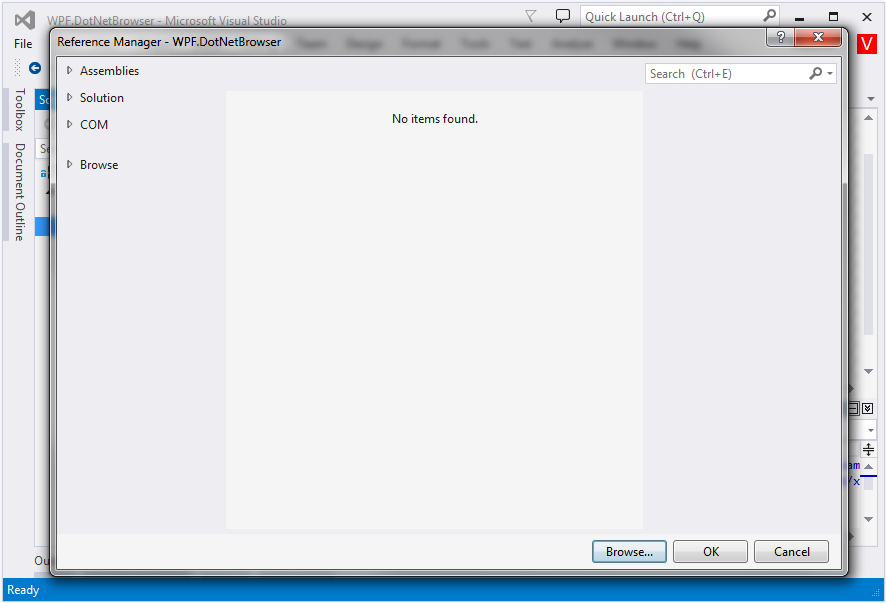
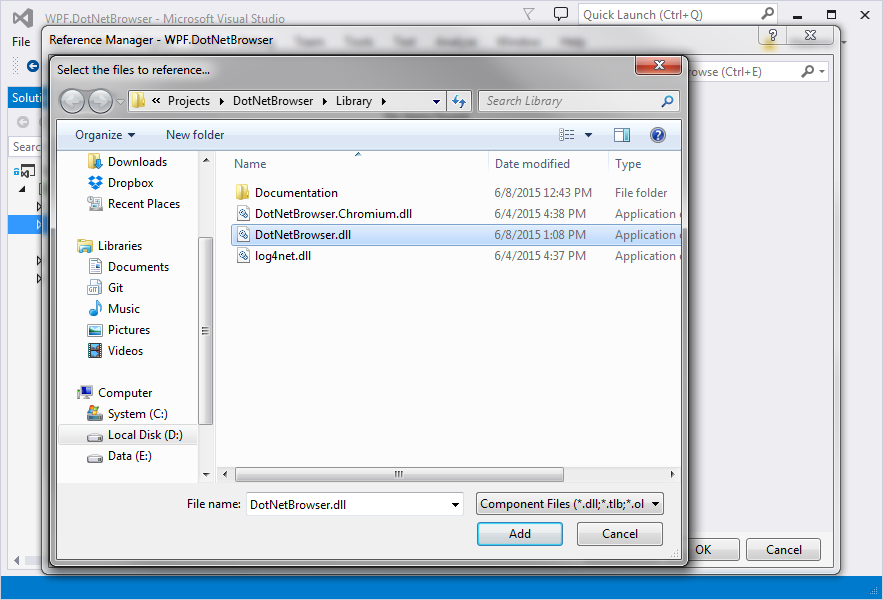
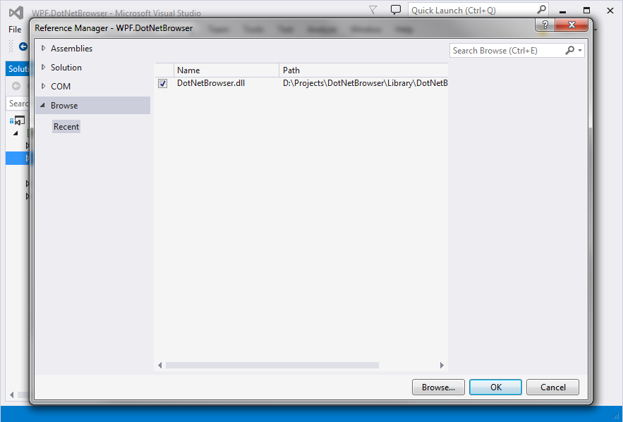
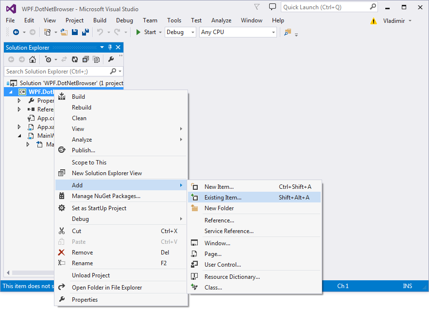
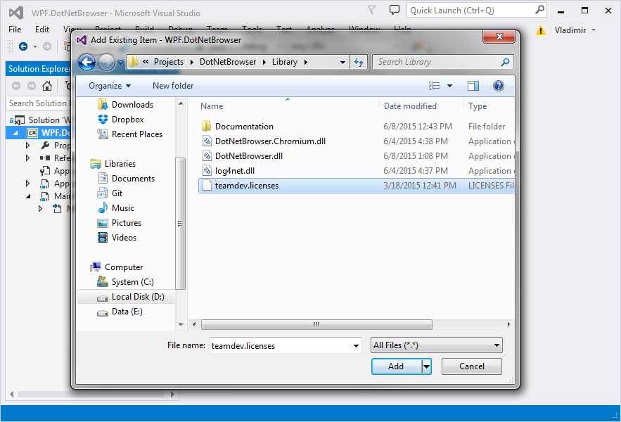
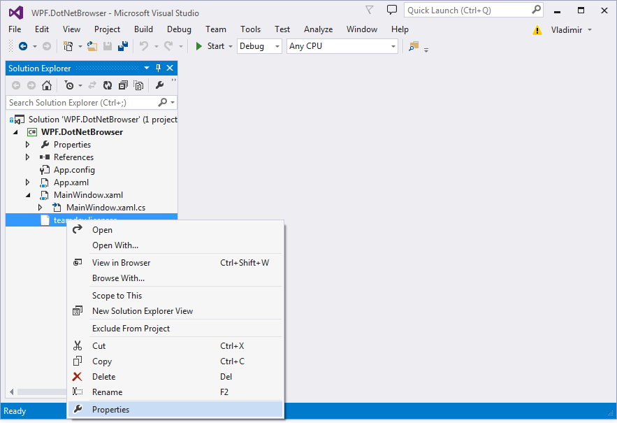
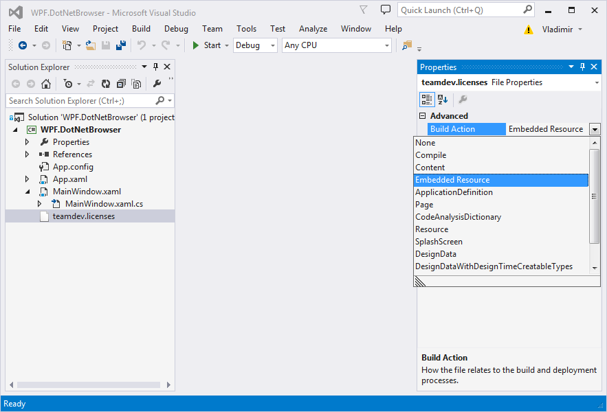
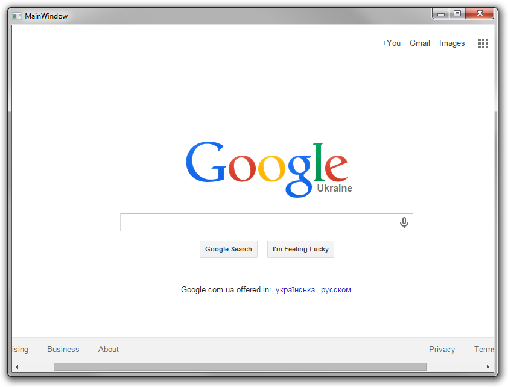

Quick Start Guide — WPF
In this Quick Start Guide you will learn how to download DotNetBrowser library, get evaluation license, create, configure and run your first .NET WPF Application that loads and displays www.google.com web page.
Environment: Windows 7, Microsoft Visual Studio 2013, .NET Framework 4.0.
Download Library
To download DotNetBrowser library navigate to http://www.teamdev.com/dotnetbrowser
and click Download button. Extract downloaded dotnetbrowser.zip archive into the D:\Projects\DotNetBrowser\ directory
Download License
To get free 30-days evaluation license please fill the web form
and click Send Me Evaluation Key button. You will receive an email with a link. Use this link to download evaluation license (teamdev.licenses). Save the license file in the D:\Projects\DotNetBrowser\Library\ directory.
Create WPF Application
Create a new WPF.DotNetBrowser WPF Application C# Project in the D:\Projects\DotNetBrowser directory:

Add DotNetBrowser.dll
In Solution Explorer right click References and select Add References... menu item:

In opened Reference Manager dialog click Browser... button:

Select D:\Projects\DotNetBrowser\Library\DotNetBrowser.dll file and click Add button:

Click OK button:

Add License
In Solution Explorer right click WPF.DotNetBrowser and select Add — Existing Item... menu item:

In File Open dialog select D:\Projects\DotNetBrowser\Library\teamdev.licenses file and click Add button:

In Solution Explorer right click teamdev.licenses and select Properties menu item:

In Properties panel change Build Action to Embedded Resource:

Change Source Code
Insert the following code into MainWindow.xaml file:
<Window x:Class="WPF.DotNetBrowser.MainWindow"
xmlns="http://schemas.microsoft.com/winfx/2006/xaml/presentation"
xmlns:x="http://schemas.microsoft.com/winfx/2006/xaml"
Title="MainWindow" Height="350" Width="525">
<Grid Name="mainLayout">
</Grid>
</Window>
Insert the following code into MainWindow.xaml.cs file:
using System;
using System.Collections.Generic;
using System.Linq;
using System.Text;
using System.Threading.Tasks;
using System.Windows;
using System.Windows.Controls;
using System.Windows.Data;
using System.Windows.Documents;
using System.Windows.Input;
using System.Windows.Media;
using System.Windows.Media.Imaging;
using System.Windows.Navigation;
using System.Windows.Shapes;
using DotNetBrowser;
using DotNetBrowser.WPF;
namespace WPF.DotNetBrowser
{
public partial class MainWindow : Window
{
public MainWindow()
{
InitializeComponent();
Browser browser = BrowserFactory.Create();
WPFBrowserView browserView = new WPFBrowserView(browser);
mainLayout.Children.Add(browserView);
browser.LoadURL("http://www.google.com");
}
}
}
Run Application
To run application press F5 or click Start button in tool bar. If you did everything correctly then you should see the following output:
